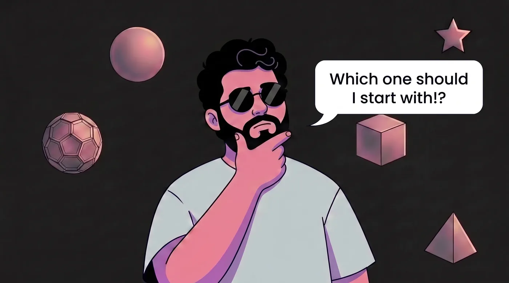

طراح گرافیک ارشد
[ متن معرفی کوتاه — ۳ تا ۴ خط. توضیح مختصر درباره رویکرد طراحی، تخصص و نقاط تمایز. متن نهایی در مرحله تدوین محتوا نوشته میشود ]

نه پروژه منتخب از هفت سال طراحی هویت بصری، چاپ و کمپین دیجیتال